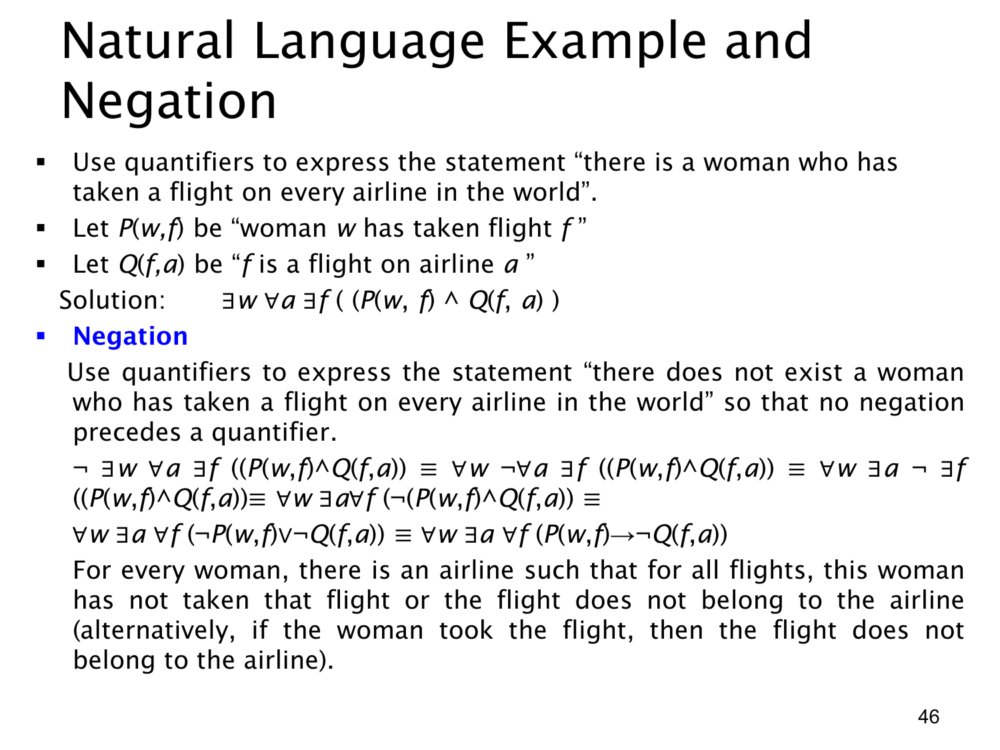

L1.2 · 第 46 页讲解原文
查看这一页课件

三层量词的自然语言与否定：航空公司例子
课件设 w 在女性中取值，a 在航空公司中取值，f 在航班中取值；P(w,f) 表示“w 乘过航班 f”，Q(f,a) 表示“f 属于航空公司 a”。“存在一位女性，她乘过世界上每一家航空公司的某个航班”写为
∃w∀a∃f(P(w,f)∧Q(f,a)).
读法是：先找一位固定的女性 w；对任意航空公司 a，再找一趟可随 a 改变的航班 f，使她乘过该航班且该航班属于 a。这不要求她乘过每一家公司的所有航班，也不要求同一趟航班属于所有公司。
课件接着否定整句，并要求最终没有 ¬ 直接放在量词前。逐层翻转得到
¬∃w∀a∃f(P(w,f)∧Q(f,a))≡∀w∃a∀f¬(P(w,f)∧Q(f,a))≡∀w∃a∀f(¬P(w,f)∨¬Q(f,a))≡∀w∃a∀f(P(w,f)→¬Q(f,a)).
最后一句表示：对每位女性，都能找到至少一家航空公司，使她没有乘过该公司的任何航班。中间的 ∀f 覆盖所有航班；若某个航班不属于选定公司，¬Q(f,a) 为真，不构成问题；若属于该公司，就必须有 ¬P(w,f)。
比较原句与否定句的见证安排：原句需要一位女性覆盖所有公司；否定句允许每位女性各有一家未乘过的公司。两个不同女性的“遗漏公司”可以不同。课件最后用 P(w,f)→¬Q(f,a) 只是把 ¬P∨¬Q 写成条件句，并未改变意思。